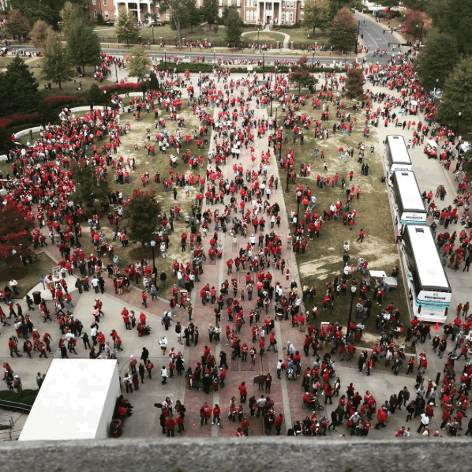

Miclain Keffeler
Computer Science Student at The University of Alabama
The University of Alabama
Department of Computer Science
Tuscaloosa,AL 35487


Small Town Living
I grew up in a small town called Chillicothe,IL. It was just outside Peoria,IL, which you almost certainly have never heard of either. There was a total of 6000 people in this town, and in true small town fashion, it felt like I knew everybody. I played football for as long as I can remember. My dad was heavily involved in the local league (Junior Football League of Central Illinois). My dad would announce the football games (Ages 10-14) for me and everybody else that played. When I wasn't playing football, I was helping my dad by playing the music/sounds or helping out in general. We spent so many years together doing that. Very good memories. I was very lucky to have these memories that will never be forgotten. The town is situated on the west side of the Illinois River. The biggest thing that happens in this town is the Summer Camp Music Festival. Since its start in 2001, it has grown to more than 20,000 attendees. In 2014, it was listed as one of the top 40 music festivals in Rolling Stone. I spent my younger days taking the bus to Mossville Schools. This was where I learned who I was, and what I wanted to be. But it feels like it wasn’t that long of a time because before I knew it I was in high school at Illinois Valley Central. I drove past the park where Summer Camp is held, Three Sisters Park, every day on my way to school. In the middle of my Sophomore year in high school, my father was offered a job he had been working for since he was 24. One downside, it was exactly 500 miles due south of where we were living. We left for Memphis,TN the day after Christmas, 2012.
Y'all Don't Know The First Thing About Southern Living
If anybody ever tells you that southern gentlemen don't exist, don't bother listening. My parents moved us to a suburb of Memphis, where southern perfection comes to life. Businesses cannot put signs on the street that are taller than 3 feet. The famous Mcdonalds "Golden Arch" stands at a measly 3 feet tall in Collierville,TN. I learned very quickly how much 500 miles can change things. I picked up right where I left off, in the middle of sophomore year. Little did I know that this school was top 10 in the state. I certainly had it in for myself. It is here I truly became disciplined, and a hard worker. Aside from the fact that my school size nearly quadrupled, I was also in harder classes. I also played football and had started working out with the team within weeks of getting there. My education has always been important to me. So, I had to find time between the end of practice every day and 7am to get all of my homework done. Rather than staying up past 10pm (when I was already very tired) I chose to wake up early at 4am most weekdays to be alone, with a cup of coffee, and do all of my homework. Not only did it allow me to focus on my classes but I soon caught my stride. It wasn't long before I was taking the ACT. Junior year was filled with excitement as I started touring colleges. I toured Ole Miss, and it was nice. Then I toured The University of Alabama. I loved everything about it. From the campus, to what they stood for. It felt amazing to be here because everything about it was a class act. Not to mention the football. Here at The University of Alabama, we are champions. But we know how to lose and learn, which is a lesson not many schools get the opportunity to teach their students. Afterwards, I toured The University of Tennessee at Knoxville, to make sure I wasn't crazy, but I already knew my home was in Alabama. I graduated from Collierville High School with a 3.989 as the 91st of 477 in my class. Having gone through such a big change and held my grades up throughout is something I am proud of.
The Beginning of Something Beautiful
I wasted no time once I got on campus. I got a position as the Public Relations Chair in my ACM Chapter and met a lot of fellow classmates that way. I also knew I wanted a job so I had set up on-campus job interviews. I got a job working under Event Technology, whose office was in Bryant-Denny Stadium. Essentially, It was up to me, 1 other student, and 6 other guys who work there full time to setup and run the audio/visual experiences for every major event on campus, including football, baseball, basketball, gymnastics, and more. For every home football game of the season, I got to be inside the stadium, running the show. I ran the music, with 2 more guys, for the Walk of Champions. You can see what my view was like!

This was one of the best jobs. I got to experience all of these amazing things, including recruiting dinners and meeting Nick Saban (Way too long of a story to tell here). But I also matured a lot. I managed a part-time job and a full set of courses as a freshman in college. While I juggled all of this, I also became a Microsoft Student Partner in the Spring, and juggled even more. I wanted to take the fullest advantage of every opportunity that I could have. Also that spring, I became the Vice President of the UA Cybercrime Club . Summer 2015, I spent as a Summer IT Intern at Martin Engineering , in Neponset,IL. I spent my time working on a team of professionals, as well as other interns, and gaining real-life experience.
Today
Currently a Sophomore by year, I am on track to graduate with my Bachelor's of Science in Computer Science by the Spring of 2018. I will be taking my 4th year to finish the STEM Path to the MBA, and earn my Master's in Business Administration. I do research under Dr.Atkison here at The University of Alabama, and am looking forward to continuing this. With so many positive things going on in my life, I look to my past to stay humble. I am rooted in what my life was like when I was younger which defines so much about me today, and I use these facts to drive me forward in ways that amaze even myself sometimes. I am constantly looking forward to the enxt thing in my life, knowing full well that I will always be able to attain my goals because of what drives me to succeed.
Thanks for reading. Have a great day.